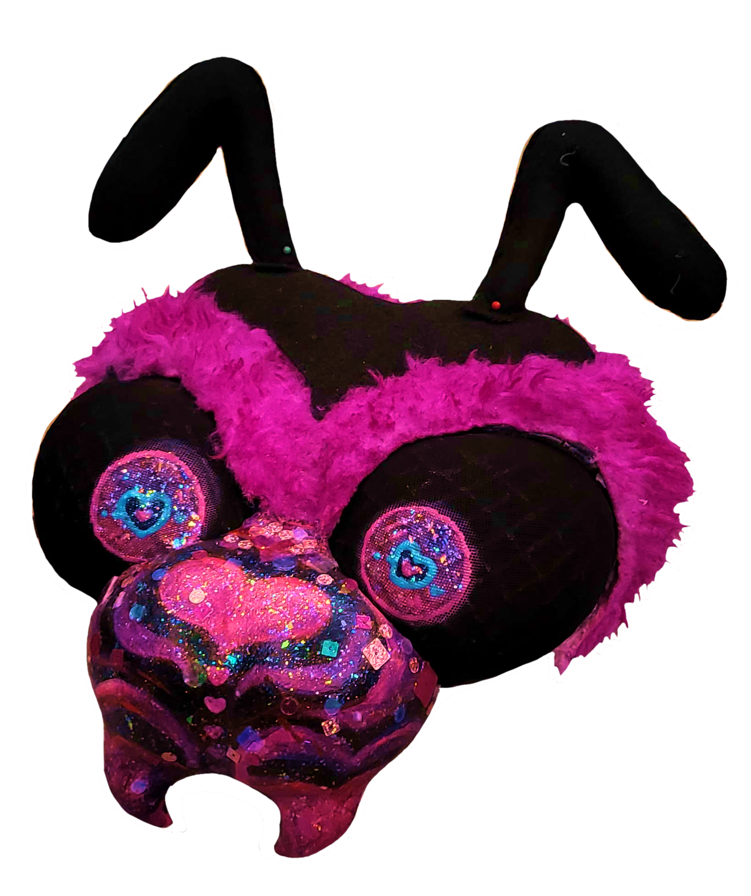

[4/30/2024]: good morrow..... the faeries and i have made some....... figgy pudding............. all are welcome to join us ✨
everyone hold hands with me for a minute ok. ok we are holding hands? good.
1 MILLION VIEWS !!! WHAT IN THE HELL!!!!!!!!!!!!
goodness gracious. good heavens !!! as mordin would say, good lord um! you all.. are so kind and nice to me :0) thank you!! i dont even know what to say. everyone is getting a gift bag. everyone look under ur seets there is a gift bag for you (there is a weezer  inside).
inside).
WELL! in other news (i guess) (i feel weird moving on so quickly) i DID end up winning that cosplay competition :0) it was 4 day passes too! ive never been to a con all 4 days so we'll see how that goes lol. here's a pic of me posing gayly in my costume among other shots of it:


aweshum..... it glows under uv which i have yet to get a real good pic of (hard to photograph myself in it) but thats what the two dark pics are trying to show. i also am reallllly bad at posing in it but we'll get there. we'll get there. i plan to do a torso/arms piece as well bc i think it needs broader shoulders for balance. also a tail and maybe wings/elytra :0) i think my roommates are leaving for work so maybe dev vid finally??? give it 30 mins ill come back and update. in the meantime here is a pic of the matching partial's headpiece :0) she's still a work in progress (needs her lashes lol)
(update 5/30/2024 tried and failed to do the dev vid ONCE MORE!! sorry talking into a microphone that long takes a lot out of me and the one take i was happy with had my microphone muted -_-)
also don't ask why i went so hard with the arrangement for a blog post idk man. this might get moved to a gallery page bc i still need to set up the etc/3d room in there.

[3/22/2024]: WHAT THE SNEEF!!
god. its been almost a year since ive updated this blog!
as you can probably tell, ive been neglecting this site more than i should haha. since that last post i started doing medium boy research (bigger boy than high school but smaller boy than grad) which takes up a lot of my time but also is not nearly as cool as the stuff i was doing in high school. psychoactive tea is not as cool as holograms imo.
god willing ill get back on the hologram shit next semester. the current project is wrapping up and i need to bend someone's arm to let me do optics/materials science as a chem major. that said the current project DID get me a huge internship for the summer, so it wasn't a total loss. speaking of school, guess who got sick for several months again at the start of the semester. its meeeeeeee. im better now though (hopefully. ive been feeling weird today and yesterday and if im sick again someone's gonna have to answer for it).
looking back at my last post- apparently it was before i made the partials. well. they are made now!! and goddamn did they come out awesome. we pulled two consecutive all-nighters and by the time we were done and at the con we only had two hours to dearily shuffle around before it closed. but neither of us regret it because we had a really good time :0). i've done some revisions on the partials since, and i'm entering mine in a cosplay comp next weekend for the chance of winning, ironically, a pass to that exact same con lol. ill post pics of it when i've got it all together :03 (that said i am terrified of showing up on campus in a fursuit, considering my hair is still green and i'm very recognizable, but i dont have a lot of money and would like to save the 80 bucks on that convention so i'm going for it. also its not very generically furry so i think maybe i could just pass it off as a costume for like, idk a dnd character or something)
what else.. OH! i'm on antidepressants now!! they're making me want to do stuff like work on my site again, what a wonderful world! i've spent some time optimizing everything to make it all load better, and a lot of time trying to make these character pages. if you remember back in january on my page's microblog thing i said i'd make a video talking about my devving process, and that's still in the works. unfortunately the one night i got the house to myself and didn't have to worry about recording myself talking to a screen for 3 hours, i left my microphone muted. so i'm still working on trying to figure out how to do that (+ also make sure i'm saying stuff worthwhile, lol).
all that aside... recently the site hit 1,000 followers. really, really insane number for neocities, but an even more insane number for me. it's so hard to imagine 1,000 people in a room together! i really am glad you all like this site so much, and im even happier about how many of you it's inspired. the cycle of creation babey!!! lets all hold hands on the small web together, OK?
i wish i had something more profound to say. it's been 2 years of the site too!! crazy! this really is a fun little passion project, and i'm glad i get to share that with everyone. i just wish i was a little quicker about it, cause i'd really like to put out a little treat for it lol. either way, THANK U FOR 1K!!!!! WHAT DA HELL!! the treat WILL come.... EVENTUALLY!! ❤ ❤ ❤ ❤ ❤ ❤
[5/4/2023]: love is in the air? wrong! 6 months since i updated this site.
A whole lot can happen in nearly 6 months. in december, i dyed my hair neon green, finished my first semester of college, flew across the country to visit my best friend and made some of the most important memories of my life. and then... i got sick for four months right after the new year x(. figures that after dodging covid for however long it's been i'd catch it and stay sick for basically the whole semester. i got better from covid after a couple weeks, thankfully, but it left me with bronchitis for a couple months and some terrible allergies even longer. it's under control now, so don't worry! but if you were wondering why i vanished, there you go.
i just finished up my second semester earlier today. i'm mad i got so sick, because it really should've been an easy one for me, but I digress. There wasn't a whole lot of interesting or important life stuff that happened throughout (that i can remember), but my bestie did come to visit again and my roommate got a second cat. her name is twix! i'll put a picture below.

she has a rock for a brain.
in other news... my birthday is in a few weeks! i know most teenagers who blog on the internet like this would have something profound to say about their first full year being a legal adult, but honestly i haven't been processing any of this shit for a while now so i don't really have much to say lol. the bestie is coming down again at the end of may so we can go to momocon together, and i'm making us some partials of our self-insert-bug-fursona-things. i've never made partials before but im excited to get back into costume making, so if you're at momo on saturday and see a pair of buggy girlfags come say hi!
that's about it. i've been experimenting with some acnh modding and learning to crochet/knit, so maybe those projects will make it up on here someday. i want to put the partials up on here too once they're done, so hopefully i can get around to doing a mini overhaul of the gallery. all of you stay safe, i love you!
[11/12/2022]: play that song. again. which one man? the one that goes
lmao i literally just stopped writing that last blog post in the middle of it. ok.
halloween came and went... my costume fucked lemme tell you that. NEARLY won a contest at a kiki but came in third on account of how i cannot serve (it was my first time so i have an excuse). you guys might get to see it at some point, who knows. ive also opened commissions now!! if u guys could check them out i'd really appreciate it :-) im hoping to get some gender affirming stuff soon so thats what itll be going toward lol
unfortunately what i've said in my last blog post is very much true, college is leaving me with absolutely no free time :-( what time i do get is normally spent on baking or cooking, so maybe ill start a page for my food sometime. that alongside a fashion page are my two main goals rn i think. very much hoping to get back into updating this site again more often in the future, but given how things are going we'll have to see. once i get those two pages up and running it'll probably be big chunky updates spaced out instead of little ones all the time, which tbh is probably a much more sustainable way to think about updating my site in the future.
good news is i have break next week! but ill probably spend the entire time studying and hopefully sewing clothes for myself. then after that it's like a week of class a week of finals and then im out of there... crazy how fast college semesters go. i wish break was closer to the middle of the semester, the way they have it with like 4 straight months of school then a week of break then one week school then finals is really... not good tbh. but what can ya do.
that's enough talking about school. some good non-school things that happened.... i found a used cd store in the town i moved to! and inside.. i found actual copies of good for your soul, boingo alive, and the black parade, all from their original runs! i didn't get a lot of time to look around there since i was between classes, but me and some guys from the jazz band are gonna go look later. christ i sound like a fucking loser. i promise im cool.
anyways im like.. really glad this site has stood up to the test of time in a way? like even tho i havent done anything to it in like two whole ass months it's still getting traffic. thats super cool. u guys rock ♥ hopefully i'll see yall again soon o7

[8/28/2022]: AND MOTHER WAS A WARDEN TO MY LEGS AND TO MY TONGUE, YOU SHOULD HAVE RAISED A BABY GIRL I SHOULD HAVE BEEN A BETTER SON!!!!!!!!!!!!!!!!!!!!!!!!!!!!!!!!!
hai hi haiiiiiii :-) college sucks for obvious reasons (i have literally NO free time now this is becoming less and less of a hyperbole with each passing day. idk how i plan to do this for 5-6 years (i plan on doing a masters degree after my current one)) but we have a cat now :-) his name is mozzarella stick he is the sweetest little guy on earth except when he doesn't wanna be. he's conkted out beside me on my bed as i type this. here is a photograph of him:

isn't he the cutest? anyways
like always i have some cool stuff i wanna put on the site.. unfortunately no time :-( we'll get there some day. i wanna start putting my outfits on here at some point, i think that'd be fun. i got stuff for halloween today too! im gonna do nadja from wwdits. i havent finished watching s4 and tbh im not liking it that much so far but yknow. what the fuck ever!

[8/28/2022]: hey so im on the meat hook right now but
editing my site in the wee hours of the night once more nature is healing!!
helloo everyone heres the rundown: i moved my place of living for the first time in my life, i started college, and uhhhh ?snail eggs started hatching again. fun! OH AND I SAW WILL WOOD AGAIN LAST TUESDAY. he sounded great but the venue fucking SUCKED and the start time must've been wrong or something bc despite there being two opening bands i came 40 mins in and he was already halfway through his set. AND we had to sit down AND the seats were right in front of a concrete pillar AND the tickets were like 50+ each. i did get to say hi to him afterward again and i got a hoodie that's turning me into a cartoon character the way i refuse to wear anything else so overall it was a win. anyways if you have a "city winery" in your town NEVER fucking go there it sucks i hate chain venues. also i started a cd/dvd collection hehe :-)
re:college you fucking guessed it it isn't giving me much time to do any of my hobby stuff. im there 10am-9pm half the week because of how i a. am persuing a biochemistry degree (for now) and b. have the study habits of a neurotic chihuahua. BUT... i think this week was a fluke because i was a little (a day) behind for most of it.. now that im actually ahead/caught up maybe this week will be better? idk
ACTUALLY NO IM NOT DONE TALKING ABOUT CONCERTS. my bestie came to visit and we went to the dear hunter concert earlier this month, GENUINELY either number one or number two concert experience, they were fucking wonderful. they sounded great, they got one of the guitarists to do the dance from luxury, they had fucking puppets of the guides set up over some of the lights mein gott. when they did the encore their last song that they played was king of swords (reversed) and like what a good fucking song to end on. the energy was amazing, defintely go see them if you have the chance! okay now im done talking about concerts
uhhh what else. idk i had a few experiences that changed the trajectory of my life as they say. wont say what though because as much as i love ranting here im gonna try to refrain from putting my self up on the autopsy table. oh ive worked on my model a little bit more! heres some pics-


now i know what you're thinking. "glowstick, why is it half grey?" i haven't finished texturing it yet. "glowstick, why does the shader look like ass?" i dont know how to make shaders someone please come help me "glowstick, how you do expect to render this thing moving around using only your measly 1050ti?" that's between me and the 1050ti.
um. anyways. i just remembered i had a tumblr ask about neocities i meant to answer earlier so let me go do that.
cool i did that. uhhh its getting a leetol too late now but will hopefully come back with another update here soonish... got a request to add a music player tutorial thing so will do that at some point. gooooo night o7
[8/4/2022]: wastin away again in margaritaville....
ive been listening to margaritaville for the past 5 hours someone come get me out please

[7/14/2022]: welcome back to what is apparently the now monthly blog update ayoo
that's right hello helloooo~ god soooo much has happened since my last update TnT even tho it's summer i've still been super busy!! me and a pair of roommates managed to secure a place to live for college, so most of what i've been doing is moving and working on miscellanious art projects and artfight and shitting myself while playing subnautica as a "downtime".. with all that happening it's been kinda hard to find the spoons for working on the site, lol.. which is IRONIC. because i just found out that i'm on the first page of the websites tab on neocities????? what the FUCK????? literally when did that happen!!! what the hell!!!
well thank you guys!!! seriously- around the last time i updated i was at 100 followers and 25k hits, now it's 150 and 50k hits! and i havent even had time to do anything! you all are so nice lmao :'-)
i wanna get back into working on the site soooo bad.. i gotta get the gallery up and running all the way (i have a new textile project done that i think you guys will like n i wanna put it here) n i wanna add a photobook, and a sorta baking diary... aughh... well, im gonna try to see if i can update the gallery a little.. if it's not updated within a few hours of me putting this blog post up, know that i failed lol
[6/4/2022]: I'm at the birthday. im at the graduation. im at the combination birthday graduation.
well sorta. but i did graduate a week ago, and my birthday was a week before that. so yay! i would've updated this blog sooner but MAN does it require a specific sorta spoon that i haven't had recently. but both things went pretty good, i got a LOT of money from both things being back-to-back which is always a win in my book :-) i got some very simple upgrades for my computer setup with some of it (new speakers + mic, + finally got the right cable to hook up my second monitor) the other day and wow. this whole process of upgrading all of the technology ive had thats like 4-6 years old is crazy cause its like WOW this is SO much better i genuinely thought this would've been shitter for the cost but it isn't. for context i always pick the cheapest option because i hate spending money with a passion lmao. but yeah that was really fun!! i also got accepted into the college i wanted to go to as a transfer for next year so yippeee :-) scary tho bc i have to take. two calculuses and two chemistries before i transfer in. regretting my major (biochem) already.
in other, less stressful news, i got the zoomies last night after seeing some REALLY pretty models from a few artists who do stuff for vrchat and was like OK well time to remake my model, actually. here is my ref sheeet it's still sorta a wip bc i meant to add paw refs and a background and figure out how i wanna do the outfit:
![A drawing of the webmaster's fursona in A-pose from the front and the side. It is a green, bipedal gummy worm character, which has a long pink-striped tail and three pairs of arms, each one a different color. They have two dual-toned antennae and a blue mullet. It has confetti freckles on it's face, and a pink heart-shaped nose. They are wearing a purple hat and have a beanie babie flip tag clipped onto their left antennae that says 'cg' instead of 'ty'. The text to the left of the drawings reads 'CG the gummy worm, (it/they/he/she)'.](../../../media.discordapp.net/attachments/643227498364272650/982741546698936341/CG_PART_3_REFd41d.png?)
aaand here's what i have so far! im still in the blocking stages, but now that i have an actual computer, i wanna do this one full high-poly (the last was mid poly because it was all done on a surface pro laptop lmao).

i wanna do more tonight but my hands are starting to hurt ;n; alas! the life of a frail little bitch. i mean i have been going for like... 8 hours but that's not the point. jesus christ i've been going for 8 hours.
anyways! im relistening to the dear hunter acts again :-) thank you casey dear hunter for being the most insane person on the planet. genuinely i recommend them SO much, if you haven't listened before and don't wanna jump in with like 5 and a half hours of music start with uhh mr usher, bitter suite IV and V, and like the oracles on the delphi express and see if you like those. i wish i didn't zone out so easily because so many of these songs are so good and i just end up not properly listening to em when i do the full albums :-( cringe and fail...
ok. i think im either gonna go draw (if my hands let me, but i want something to do so i can keep listening to tdh) or ill go get back to my mp100 rewatch.. catch yall later o7!
[5/13/2022]: REMINDERS
first of all hi for the love of god hello like 11 ppl just followed me in the span of like two days. welcome to my abode. second of all this is going to be less of a blog post and more of me writing down things i want to do for the website this next week so i dont forget. okay here we go
- put everything on external hard drive + get brackets on laptop so u can work on it at school
- more permanent guestbook incase cbox ever goes down like freeGB did
- figure out how to either make pages in a div or how to resize an iframe based on content url
- gallery reformatting
- CHARACTER PAGES FOR THE LOVE OF GOD CHARACTER PAGES
- custom font for headers
- PETS PAGE for the snails
- page full of transparents of prized possessions made to look like chimney's fuckin realm/area/house/deal
- redo zap's character page playlist to make it more shitty gay bar disco pop
- page for transparents of the beanie babies
- resize the mainpage navbar actually wait i can just go do that now holdon ok done
- page for things i bake
- photobook
- doodle page in the gallery
alright that's it no gif this time look at this picture of deadman instead ❤

[5/10/2022]: (once again) long time no see!
hiiihihiii this blog is LONG overdue for an update.. well! some run downs of stuff that's happening i guess: i worked out my college stuff, a bunch of my important school stuff is done now, and i went to the will wood concert the other day! it was really fun, the crowd was nice to him and everyone went insane over every song (i ALSO went insane over every song, i haven't been to too many concerts but this was my favorite so far :-)) i didn't get any pictures because he asked for no video/pictures since the show was filmed for the next documentary. so maybe you'll see me in that! won't tell you what i look like tho, lol. it'd be funny if i was in one of the audience shots of it, then i'll have been in 2 (two) official will wood videos! i got to talk to him afterwards too, i told him i animated in memento mori and he like. pogged at me?? he was so nice :-) i have a signed cd of the real will wood now too! i'll make a transparent of it in a little bit so you guys can see :-D so needless to say i had a GREAT time lol.
but other than that, not a whole lot has happened. it's been WAY more work wrapping up high school than it should be (the counselors made us take full schedules this year despite everyone only needing like two/three classes -_- it's made for a lot more work than there needs to be), but i'm almost done! then i'll have to like. get a job to get some extra cash for college, lol.
i've also been writing a whole lot more recently, me and a friend have been going back and forth with this google doc for like the past couple days and just going absolutely insane while we're at it (hi greg btw if youre reading this!). Thinking about the character pages once again as well.. unfortunately i haven't been able to do anything but smaller sketches of this newer character recently, lol. on top of that i've been thinking abt redoing my vtuber model and starting to stream (?!) i've been really inspired by a handful of "weird"/unconventional vtubers recently and i'm getting that inevitable horrible urge to scrap what i have and start over AGAIN despite the fact that i haven't even used what i already have at all. oh well...
as for the website, i've got a few ideas for formatting gimmicks on some of the pages.. i just gotta get around to doing em. now that i'm sorta free from school, i should have more time to do stuff i want to ;-)
that's all i really wanna say right now. thank you guys for almost 20k hits?! and NEARLY 69 followers (nice) catch yall later !!

[4/14/2022]: lol i really worked on the site and then put off actually updating it lmao
hullloooo how is everyoneee... well first off 10k hits amirite??? damn. well actually its 11k views now hellloooo ?? im glad people like the website lol :-)
just so u guys know i AM planning some really cool stuff for site pages in the future,... i just really have to get out of school before i can even breathe at this point :-( good news is tho that i graduate in like a month! so that's fun :-) i'm also working on making assets/refs for the character pages.. im not super hyped abt programming at the moment im typing this, but the refs have been coming out really niceys :-) id show a sneek peek but my laptop's a bit broken atm so getting any images off of it is kinda difficult rn lmao
in other news.... ive been going a little bit insane over the new(ish) will wood/chnt songs.. GENUINELY thought yes, to err is to be human, so don't be one was gonna be a lucille song but i think syndey getting pissed at jedidiah is great too (at least, i think that's what it's about). shoutout to venetian blind man for giving me visions of animatics untold. oh my god no i can't say the word 'animatic' i have so many in my head that they all instantly starting rotating god help me.
okok. im gonna go update the site now. hopefully ill be back soon with some more fun stuff.. we'll see

[4/6/2022]: oops! no title
gooooood evening everyone.. wow i havent posted anything on this blog in over a month.. well technically i did but it was cringe so i didnt post it officially lol
anyways how have you guys been? ive been. extremely caught up in school stuff. my project didnt work out, everytime i fix something something else breaks so i decided i would give it a rest for now lol (even tho my final oral defense for the thing is due monday lmao). i started working on a video game with a friend, which is wack! im doing programming + music + maybe some art, theyre doing art + writing :-) very excited to see where it ends up.... i also started making a website for another friend which im very excited about... pup had a really cool concept and i sorta jumped at the opportunity to do some fun css/js stuff with it lol.
ive also just been thinking about my ocs a lot lately.. mainly zap because of course. shes my bestie we're like besties at this point. i realized the other night that she would TOTALLY have tattoos and part of me is spinning because i LOVE tiny little details of a character's design that show their personailities and lifestyles and makes them look lived in but the other part of me is like dear god she already takes so long to draw when will it end.
i think i might go work on the site a little bit, i have some ideas for some new pages that i wanted to try out. ill probably come back later to talk some more
okay hi its 3 am it was like 10 when i wrote that. anyways i finished my new about page for the most part ❤ just need a graphic for it and ill show u guys :-) and maybe some sounds.. and also an intro animation for the page i think that would look cool. man i have so much i gotta do but i really just sat here and went haha what if funney webmaster moments... lol.

[3/3/2022]: IM BACK!! (sorta)
HI its been a while!!! i dont really know what i have to say for myself. at first i was genuinely just caught up in science fair stuff but then immediately after i nose-dived into the hitchhiker's guide sauce and now im incapable of thinking about anything that doesnt involve zaphod beeblebrox for more than like an hour. which i mean that's what he would want but oh my god im plagued with visions about this stupid manwhore. it doesnt help that everyone else has incorrect opinions about him and ford so i have to/get to come up with all the good stuff.
uhh okay site stuff: number one things i wanna do right now is clean up this page and add an archive page. not like a site archive page but like a page where i can store things that may be prone to being removed from the internet via a lack of funding for domains/servers (ie. h2g2 radio show. yeah sorry but theres only like two captures on the wayback machine + the links are broken on one + my friend whose been into it longer said she had difficulty finding it until i found them via the wayback so might as well). might also just call it the library and put some of my collections in there too. i dont think the character pages will be happening for a little bit because im actually drawing FANART now (this is significant because it hasnt happened in like three years) and i need to ride this as far as i can because oo oooo baby. the world needs more good art of zaphod and ford. god im so sorry im having interests again like some sort of child. you remember having interests? its crazy.
umm!!! that's all for tonight i think. you guys might not see this until a few days after ive written it because i wanna do some things to the site before i post an update. i wanna come back with a bang not a quiet splat u know?
alright that's it! good morning/good afternoon/good night besties ❤
[2/22/2022]: TWOSDAY INNIT!!!
NOTHING to actually say here atm but happy angel numbers day everyone!!!!!
[2/17/2022]: skabopdopdeedow skebopbop bwow bwow
hihi how is everyone :-) i have the worst headache rn and im sooo sleepy for no reason (⬅ only got like 2-4 hrs sleep each day this week) but i had a nice day so i thought id write stuff down before i forgot
me and my mom went to go see idkhow live!!! they were REALLY good.. choke is AMAZING live the studio recording rlly doesn't do it justice. they had this lighting setup that was just so like. bonkers and crazy well done. here are a few pics i took!! they had an orange/green lighting thing during absinthe that was REALLY sexy and i REALLY should have gotten a picture of it but i didnt :-(


on the way home we listened to the college radio.. it was rlly funny bc apparently they're having like a deep sea theme for this week?? next week is deer week. needless to say im obsessed. they were playing like really obscure experimental jazz/funk and just straight up music that would play in a video game dungeon (dungeoncore) so when i got home i was like okay maybe i can pull it up on my computer. i ended up pulling up a DIFFERENT college radio for that same college on accident and like the second song i heard on it was fucking squid?? like peel st by fucking SQUID?? it blindsighted me it was like seeing god in a publix. i've never met anyone else who liked squid let alone heard it on the radio.
i had a big long few paragraphs here about how the radio station i can't find is driving me insane. the tldr is that its probably hidden for some reason and im really sad about it because they were playing cool shrimp jazz songs :-( okay bye lol
[2/13/2022]: uh oh besties!
LMAO SO. yesterday my mom was gardening and she accidentally cut the fiber optic wire for our internet and the guy who came to fix it just straight up came and left without doing that. SO right now i am speaking to you all from the land of the wrote-this-in-the-past-and-uploaded-it-when-i-got-internet-back! supposedly someone else is coming tomorrow to actually fix it so we'll see lol.
IN OTHER NEWS. the part that i was talking about last post has NOT gotten here yet and i am knawing at my cage like an under-enriched parrot. starting to enter catastrophe mode bc i havent worked on this thing in like two weeks and the angst eye of tea is really kicking in girlies!!! im fine tho im being so brave about it trust me. i also made kandi all day yesterday and now i have two half-gauntlets! i made an even peyote cuff and OOO boye.. i love the texture sooo much it's become a new stim for me :-)
i thiiink that's it for today. i did some work on the about page, made a new page for the gif of the week... i wanna do more but i have school tomorrow + i'm reading hitchhiker's guide and i wanna read more of it b4 bed + it's already midnight :-( maybe tomorrow if my part still doesn't get here/the internet's still down i'll start working on the character pages! ik i talked about it earlier but i wanna show you guys my ocs so so so bad you have no idea. ideally i let you guys sniff each other thru the door so as to avoid stressing either parties out.
ok, see yall!!
(no gif this time since i normally link them from the internet lol)
[2/11/2022]: okay im normal now
HII BESTIESSS first of all WOW okay there's quite a few of you guys now?? hihi!!!! i hope you all are doing well!! im handing each and every one of you guys a cupcake (yes i did make the ones i was talking about a few days ago, they were good)
OKAY SO ONTO WHAT I WANTED TO SAY. remember how like a week ago i said i wouldn't be able to update the site for a bit? yeah what a lie that was LMAO!! it's taken a little longer than i hoped to get my stuff for that research project i was talking about, but my last component gets here tomorrow and im also gonna start working on building the hologram screen finally. SO i MIGHT stop updating for a couple days forreal this time. i should really explain more stuff about the project tbh but uhh. im tired and paranoid and i need the research to be novel or else i wont get my diploma 💔 ill probably talk about it a little more tomorrow tho, maybe ill start a research log page like i talked abt earlier?? idk, we'll see (if u can't tell, im very wishy-washy about how much i share about this project at any given moment LMAO)!!
in other news, i got stuff to make kandi today!! my scene kid dreams are finally coming true ^u^ maybe ill make a page for those too? i was thinking about making a few pages for my collections, i think itd be fun to make a bunch of transparents of my webkinz/beanie babies and my little ceramic animals..
speaking of pages!! i REALLY REALLY wanna add my ocs to here o-o i keep seeing other ppl's oc pages and it makes me FROTH at the MOUTH they're so cool. i need my main three's to fuck like nobody's business and i want r*ggie's to just be a picture of that shitty little minnow from spongebob. i also want to set up like an arg or something on here with glucose... SCREAMING and HOLLERING and SPOONS RATTLING!!! i have so so so many ideas and so little time rn :-(
gah what else what else.... herm idk! its kinda late and im kinda spoonless but i might go and try to add some more stuff to the gallery?lol we'll see. see yall around, love u guys!!
(⬅ me listening to the mad rat monday mashup album go listen to it its really good)
[2/10/2022]: 2323O5[T3452834534,,P[VSD32890Y3!!!!!!U8912034U123JOP
I GOT TICKETS TO GO SEE WILL WOOD

[2/5/2022]: popopopopopopopopopop
HI I WAS WORKING ON THE GALLERY but i remembered i can use this to log my thoughts and i probably should do that :-) to keep me sane :-)
ANYWAYS a few weeks ago i made these cupcakes that were like chocolate cake chocolate mousse frosting chocolate ganache filling they were literally the best thing ive ever made and the best cupcakes ive ever had (⬅ self-absorbed) and i think im going to KILL someone if i dont get one RIGHT NEOW. literally sitting here like hrngnrngng and im not allowed in the kitchen to go make them. pleasepleapslepse send help oh mygod.
also re: the gallery thing i CANNAE figure out how to get rid of the vertical space between images that have different heights. if anyone knows how to fix that please come help ill do anything. ill mail you one of the cupcakes if i make them tomorrow (⬅ lying) (⬅ does not know how to send cupcakes through the mail). god i feel like im thinking at 86 mph and am mayhaps being targeted by a large beast rn but maybe thats just because a friend said nice things about my writing and im listening to 100gecs. actually you know what would be funny what if i put the 100gecs on 2x speed hold on. okay nevermind that wasnt fast enough to do anything for me but was still fast enough to ruin the song.
errmm ermm okay im gonna go back to trying to get the gallery done. wish me lick o7.
[three hours later] OKAY i didnt figure it out but i added all of the pictures and gave dates to them and links for the artfight attacks. goog lord. the offer still stands if anyone can help me figure it out.
okay thats it for today. gn kings lets get this blankey o7

[2/3/2022]: GIRL HELP
aughackackkaca okay this'll be a very short little entry! i wanted to pop in and say that updates/activity are probably going to slow down for a bit (until like the 27th-28th probably) cause i gotta focus on my research project (which i am planning on making a separate blog section for in the future! its abt holograms and mocap :-)). im a little sad that i had to put the site up and immediately drop working on updates but it is what it is! by no means does it mean that im dropping this thing completely tho, everything's just been a little crazy lately lol
anyways thats it! love u guys, stay safe!

[2/2/2022]: it's twosday innit?
hi againn!! sorry for putting the site and immediately fucking off the face of the earth lmao. school and some personal stuff got my ass and still has it :-( quite frankly im not really sure what to put here today since my brains sorta fried and i dunno if i wanna code today (i may not even keep this entry lol)
in lighter news, you guys are all so nice!! a couple people have checked out the site, and the reception has been really encouraging so far :'-) ive been spending some time hopping around various pages and its SO cool to see what people do with their sites.. people are so creative here!! id be lying if i said it didn't give me at least a little bit of hope for the future of the internet :-)
ik it's not a lot but ya thats all i got to say for today ansjfbk; like i said before im still not that up to coding rn so the site's gonna stay as is, i'll get on the to-do list later. see yall!!

[1/30/2022]: Site is ON-LINE!
finally.... after all this week(s?)... SHE IS ONLINE!! it took a lot of trial and error but for my first time building a website i dont think it's half bad :-) and there's still lots to do!! frankly im doing this very preemptively BUT in my mind i've finished enough to meet the bare minimum for a neocities site and that's good enough for me! honestly tho whats the fun in making a website if people can't watch you fuck it up in real time?????
n-e-ways lets talk goals for this thing!! im hoping to make it a point to make a blog post at least weekly, finish ALL the stuff already in the to-do list AND i wanna get better at javascript so i can do some cool interactive stuff ;-) im a game designer at heart so this'll hopefully be a good way for me to get started with some small stuff! on top of that i wanna revamp this page's layout/theme cause she is UGLY!! i would've done it before putting the site up but im impatient and a blog page is on the list of "required for neocities" things in my mind.
hrm hrm what else.... ya i think that's it actually! if anyone reading finds any bugs or anything please lmk! catch yall later!!!!